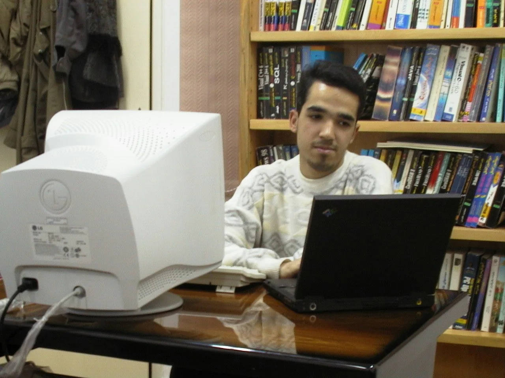
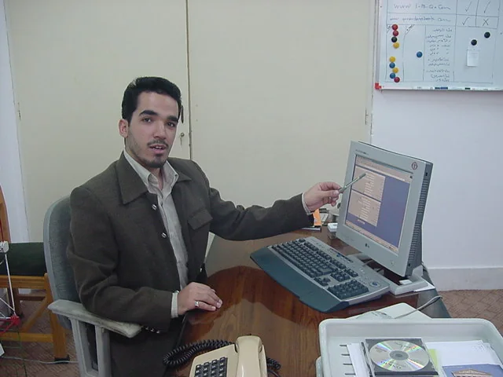
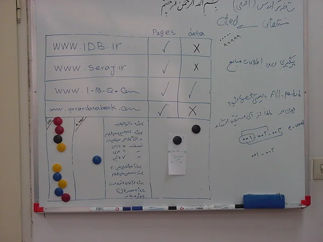
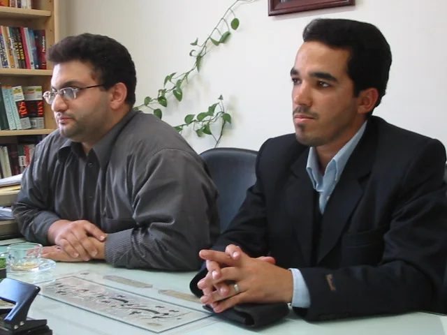
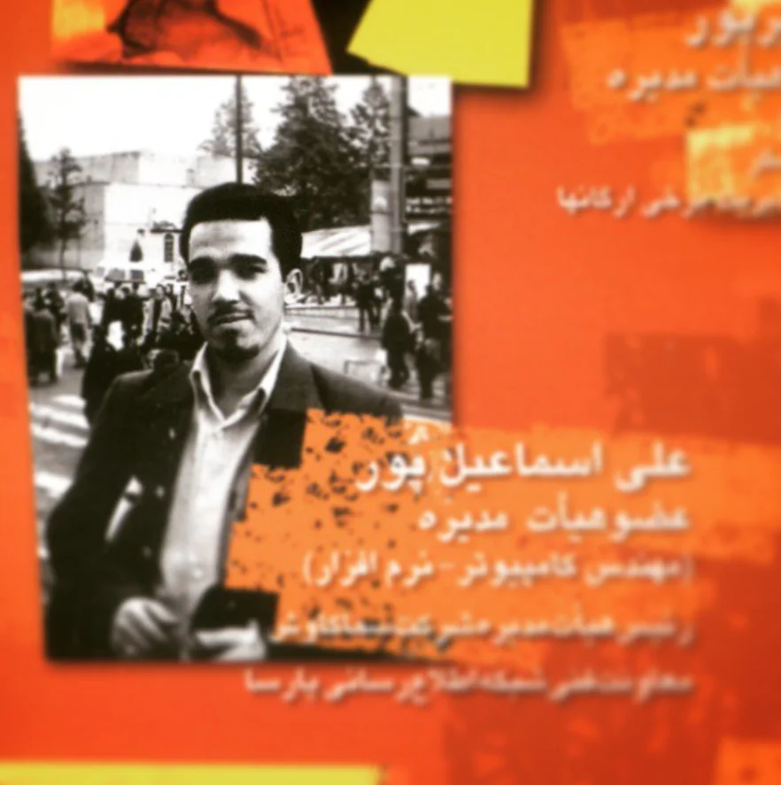
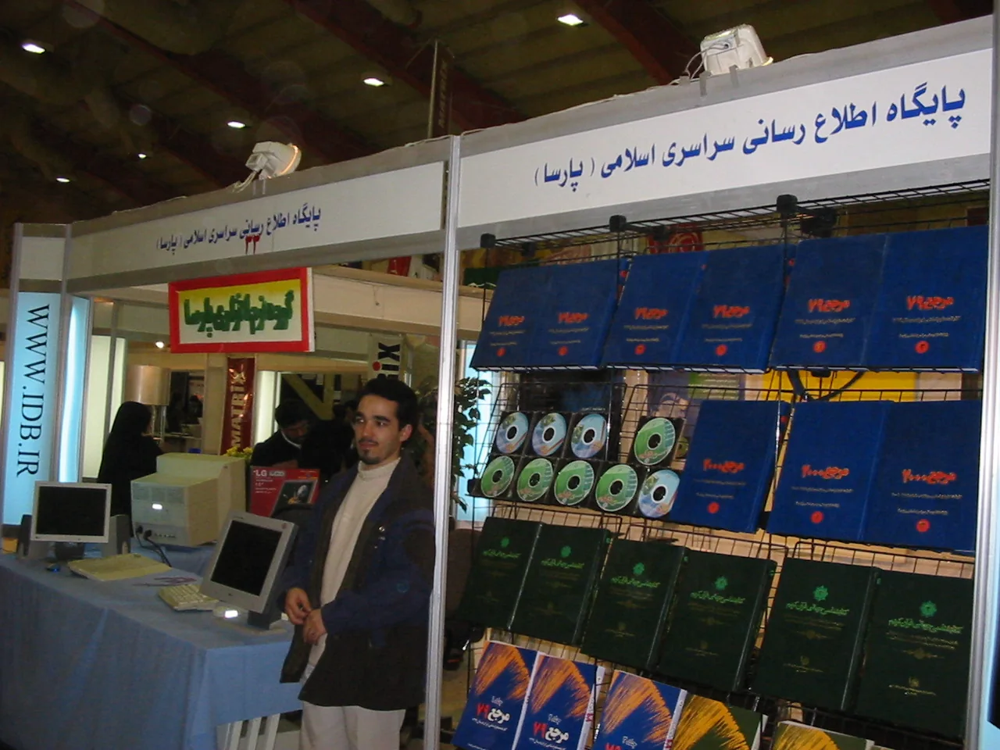

۱۳۷۸–۱۳۸۳
آغاز در نرمافزار و تحلیل سیستم
شروع فعالیت حرفهای با نرمافزار، بانکهای اطلاعاتی و محصولات الکترونیکی؛ دورهای که از اجرای فنی به تحلیل مسئله، طراحی جریان کار و ارائه راهکار نزدیکتر شد.





